Table of Contents
- Feature Story: Major Advances toward Low-GWP Cooling
- Advancing Technology to Market
- Making a Difference in the Marketplace
- Design Solutions for Building Industry
- Locking in Energy Savings
- The Future of Buildings
- Employee Profile: Dr. Jason Hartke
Download PDF Version >>
Dear Reader,
As we look back at our accomplishments from the past year, we would like to thank our partners, staff, and stakeholders for making 2015 an extremely exciting year.
We made major strides toward our vision of a strong and prosperous America in which all homes and buildings are energy efficient, affordable, and comfortable. This progress is a direct result of our partnerships with national laboratories, industry, and universities. Their successes this past year are many, and cover all aspects of the BTO ecosystem—from innovative R&D advancements, to spurring the market to adopt more efficient technologies, to locking in energy savings with more effective building codes and standards.
One of our top priorities at BTO is improving the efficiency of heating and cooling technologies, primarily because of the tremendous opportunity for energy savings and greenhouse gas reductions. We made significant progress in this area over the past year. One industry partner, with the help of Oak Ridge National Laboratory (ORNL), commercialized a new drop-in refrigerant that reduces the harmful emissions from supermarket refrigeration systems, while also lowering energy costs. Meanwhile, our partners are moving ever closer to making low-global warming potential cooling a reality, with one small business developing a full electrochemical compressor prototype that will be used in water heaters.
Our heating and cooling work extends beyond pioneering new technologies—we also help businesses switch to more efficient air conditioning rooftop units so they can start to see immediate savings on their utility bills. Our campaign to help building owners replace or retrofit their old rooftop units with more efficient units or advanced controls has helped our partners save a collective $37 million since 2014.
We also released our first Multi-Year Program Plan, which contains our new Officewide goal—to reduce the energy use intensity across all U.S. buildings by 30 percent by 2030, with a longer term goal for 50 percent reduction—and our strategy for getting there. Also of note are two new DOE reports—the Quadrennial Technology Review and Quadrennial Energy Review—which examine the most promising oppor- tunities to advance energy technologies, infrastructure, and governmentwide policy.
Energy efficiency is receiving greater attention on both the national and international stage. The President signed into law the first piece of energy efficiency legislation in years, EPA finalized the Clean Power Plan, and countries from across the globe came together at COP-21 in Paris to reach a historic climate agreement. The Building Technologies Office will play a major role in meeting our national energy and climate goals, and the accomplishments from this year made giant leaps in the right direction. Thank-you for helping lead the way to a more energy efficient America. I’m already excited for what we’ll achieve in 2016.
– Roland Risser
Director, Building Technologies Office
Of the 38.5 quads of energy consumed every year by U.S. buildings, nearly half is used for heating, ventilation, air conditioning, water heating, and refrigeration (HVAC&R). Cooling and refrigeration, in particular, are rapidly rising across the globe, as developing countries become more developed and urbanized. By 2050, the world will use more energy for cooling than heating—a dramatic change, since heating has historically been the dominant energy end use in buildings. To lower our energy costs and meet our national climate goals, improving our heating and cooling equipment is a must.
For the past 100 years, most HVAC&R equipment have relied on a process called vapor compression, which uses a compressor to circulate a liquid cooling fluid, also known as a refrigerant—creating cold air. While this process has been reliable, the refrigerants used—typically hydrofluorocarbons (HFCs)—contribute to climate change when released into the atmosphere. HFCs are up to 10,000 times more harmful than carbon dioxide, and, if we don’t take ambitious action to limit their use, their emissions are projected to triple in the U.S. by 2030. This is why the Obama Administration has made the phase down of HFCs a critical component of its plan to fight climate change.
Today, the Department of Energy is leading this charge. Through partnerships with private industry and our national labs, we made major progress in 2015, bringing to market low-global warming potential refrigerants, validating their performance in hot climates, and making critical first steps toward solutions that use zero-GWP refrigerants. With the Energy Department lowering the risk for businesses to develop these revolutionary technologies, we could see the first of them hit the market in the next five years. Here we highlight three of our biggest successes from 2015.
Proving Low-GWP Refrigerants Work in Hot Climates
Because HFC emissions are expected to rise globally, the U.S. has taken a leading role in international negotiations to shift toward low-GWP refrigerants. This year, the U.S., along with many other countries, submitted amendments to the Montreal Protocol—one of the most successful international treaties—to phase down production and consumption of HFCs.
During the negotiations over these amendments, a key technical concern arose over whether low-global warming potential (GWP) refrigerants can perform as well under high-ambient-temperature conditions. In many countries with hot climates, refrigeration and air conditioning systems commonly use older, more harmful classes of refrigerants, providing a significant opportunity to replace them with low-GWP refrigerants.
To support these international efforts, the Energy Department stepped forward and worked with Oak Ridge National Laboratory to assess how several low-GWP alternative refrigerants perform under high temperature conditions. In October 2015, we released a report that summarizes the results of that testing program, showing that several viable replacements exist for both HCFC-22 and HFC-410A, two of the most common refrigerants.
The study played a key role in the latest round of negotiations, during which countries agreed to work together in 2016 to use the Montreal Protocol to phase down HFCs across the globe.
Industry-Lab Partnership Commercializes Low-GWP Replacement Refrigerant
Refrigeration systems found in most U.S. grocery stores require a substantial amount of energy. They are also prone to significant refrigerant leakage—from 2,000 to 4,000 pounds a year—emitting environmentally harmful greenhouse gases, such as HFCs, into the atmosphere.
BTO funded a partnership between ORNL and Honeywell to develop an alternative refrigerant that would minimize the environmental footprint of supermarket refrigeration systems, while also lowering their energy costs. In 2015, Honeywell commercialized the advanced refrigerant, sold under the trade name Solstice N40. The new refrigerant, which is based on a nontoxic hydrofluoroolefin (HFO), has a GWP 67 percent lower than the conventional options, while also cutting energy costs for these refrigeration systems by 10 percent.
With Solstice N40, grocery stores can retain their existing hard- ware and simply replace their refrigerant. Approximately 37,000 supermarket refrigeration systems nationwide could immediately benefit from this replacement.
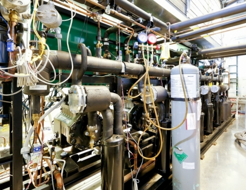
First Non-Vapor-Compression, Low-GWP Water Heater Prototype Developed
BTO is supporting a range of non-vapor compression technologies that fundamentally alter how HVAC and water heating technologies have worked for the past several decades. These technologies have the potential for significant energy, cost, and carbon savings. One that made major strides in 2015 is Xergy Incorporated’s electrochemical compressor, which can be incorporated into heat pump water heaters and a range of other technologies.
A small business from Delaware, Xergy reached a major milestone this summer when it shipped its first compressor unit to its industrial partner for incorporation into a prototype 50-gallon hybrid water heater.
The electrochemical compressor, or ECC, is a solid-state technology that uses electricity to pump a water refrigerant across a membrane. By using water as its working fluid—which does not contribute to global warming—ECC offers tremendous energy-saving and environmental benefits over traditional mechanical heat pumps. Xergy estimates that its ECC water heater will be more than 25% more efficient than current state-of-the-art heat pumps, while also being noiseless and vibration-free due its lack of moving parts. As a result, the potential annual energy savings from widespread adoption of the technology in the water heating market could total 1 Quad, equal to the electricity used by 28 million homes in a year.
“If you’re not in the heating and cooling technology industry, it may be hard to appreciate the significance of this milestone. Electrochemical compression has the potential to truly transform the market away from today’s vapor compression solutions. This prototype is the Apple I of ECC technology,” says Tony Bouza, BTO’s Technology Manager for HVAC, Water Heating, and Appliances.
Once the technology has been refined, Xergy will expand ECC applications to other markets, including home and commercial air conditioners, refrigeration systems, and numerous other heating and cooling applications. This technology is one of the first to demonstrate that it’s no longer a matter of if, but when, non-vapor compression solutions will start to transform the HVAC and water heating market.
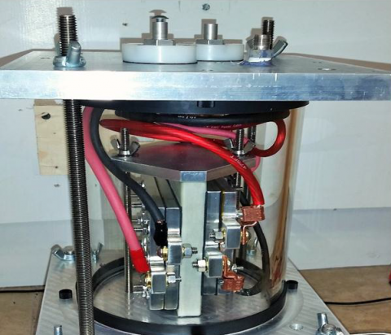
DOE Makes Major Investment in Next-Generation HVAC Technologies
In 2015, BTO awarded nearly $8 million in funding to advance next-generation HVAC technologies.
The selections fall under two major topic areas:
- Advanced vapor compression systems will use highly efficient versions of the technologies that currently drive HVAC systems, but use refrigerants that have a minimal effect on the environment.
- Non-vapor compression systems will employ new technologies that use refrigerants that don’t affect the environment, and can cut energy costs by up to 40%.
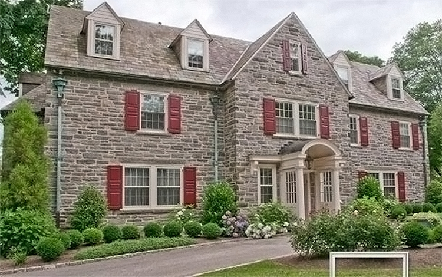
Low-e Storm Windows Approach Market Takeoff
One recent addition to homeowners’ arsenal of cost-effective energy efficiency measures is low-emissivity (low-e) storm windows. A low-e coating or glazing is a thin layer deposited directly on the surface of one or more panes of glass. The coating increases the window’s energy efficiency by reflecting radiant heat. Installing a low-e storm window over a low-performing window can reduce a home’s heating and cooling costs by 10%–35%. This window treatment is on an upward trajectory, thanks in large part to the joint development, testing, and market stimulation efforts of BTO and the Pacific Northwest National Laboratory (PNNL). Recently, PNNL validated the cost and energy savings associated with low-e storm windows, facilitating the product’s market entry.
Homeowners and businesses tend to keep their drafty and inefficient old windows—not surprisingly, as window replacement involves high upfront costs and long payback periods. In the late 1990s, researchers at the Lawrence Berkeley National Laboratory identified a potential solution: a durable low-e glass coating on storm windows that could offer a cost-effective insulating and sealing measure for existing windows. In the following years, with support from BTO’s Emerging Technologies Program and other DOE programs, the new technology option was researched, further developed, and field-tested—with positive results.
Between 2013 and 2015, PNNL and its project partners worked to validate the energy savings from low-e coatings. The storm windows were featured in PNNL’s Lab Homes, a test bed for energy efficient products funded by BTO’s Building America initiative. Researchers conducted controlled whole-home testing to validate the windows’ technical performance and to refine technical specifications for different baseline conditions and multiple climate zones. In parallel with technology validation, PNNL also carried out a market assessment and education and outreach efforts on the new storm windows through different channels, such as the Consortium for Energy Efficiency, the Home Performance Coalition, and the Building America Solution Center.
The Regional Technical Forum (RTF)—which serves as the advisory board to the Pacific Northwest Electric Power Planning Council and the Bonneville Power Administration—reviewed the PNNL team’s research results and, in late July 2015, approved the validation of savings and the specifications. With approved energy and cost savings data available, weatherization and utility incentive programs in the Pacific Northwest are more likely to adopt low-e storm windows as a cost-effective energy savings measure, acclerating the number of installations. The technology’s regional success will likely lead to its broader implementation in relevant climate zones across the country.
PNNL estimates that more than 90 million homes in the United States with single-pane or low-performing double-pane windows would benefit from the technology. Low-e storm windows are suitable not only for private residences but also for small commercial buildings, historic properties, and facilities that house residents, such as nursing homes, dormitories, and in-patient facilities. Modeling shows that the technical energy savings potential from widespread adoption of low-e storm windows could be as high as 2 quads, equal to the amount of electricity used by 55 million homes in a year.
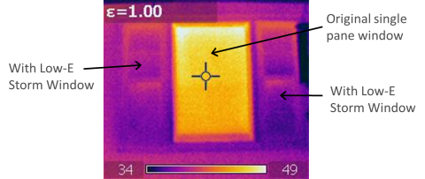
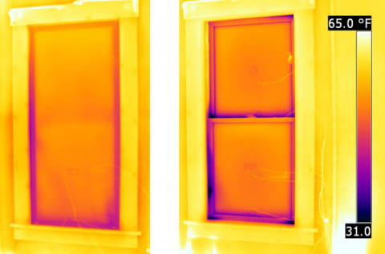
Efficient Commercial Air Conditioners See Widespread Industry Adoption
Most commercial buildings cool their buildings through an air conditioner situated on top of the roof, or a rooftop unit (RTU). Older, inefficient commercial rooftop unit air conditioning systems are common, and can waste from $900 to $3,700 per unit annually.
To take advantage of this energy and cost savings opportunity, the Department of Energy (DOE) partnered with manufacturers and businesses to launch a multifaceted program that has transformed an entire market—from a time not long ago, when zero high efficiency RTUs were commercially available, to a historic standard that ensures all businesses will have access to energy-saving RTUs.
DOE convened building operators and manufacturers to lay out a high-efficiency performance specification, initiating the High-Performance Rooftop Unit Challenge to produce units that would cut energy use by up to 50% compared to the existing standard. DOE issued a supporting announcement documenting Better Buildings Alliance members’ interest in high efficiency RTUs that met the specification. Based on the illustrated market demand for these units, manufacturers quickly responded to the challenge. Today, manufacturers are offering more than 20 RTU models that exceed this specification.
However, many businesses were still hesitant to adopt this new technology without more information on how the technology performed in real world situations, beyond manufacturer’s data sheets and laboratory testing. Throughout 2013 and 2014, DOE supported third-party verification of performance for the winning units in partnership with building owners/operators and other federal agencies, measuring and sharing their performance. These demonstrations proved that the high efficiency units save significant energy in a real-world setting, reducing the risk for owners to adopt them.
To stimulate broader savings, DOE initiated the Advanced RTU Campaign in partnership with ASHRAE and the Retail Industry Leaders Association, to spur widespread adoption. Through the Campaign, more than 200 public- and private-sector organizations have upgraded more than 43,000 rooftop units. To date, these upgrades have saved businesses and organizations a combined $37 million annually on their energy bills, while cutting carbon pollution by 356 million pounds.
The success of the Campaign and the Challenge motivated DOE to investigate issuing new standards for commercial RTUs that would set the minimum efficiency level. DOE used its consensus rulemaking process to bring together industry, utilities, and environmental groups in forming the new standard. In December 2015, DOE announced the final standard, which will save more energy than any other standard issued by DOE to date.
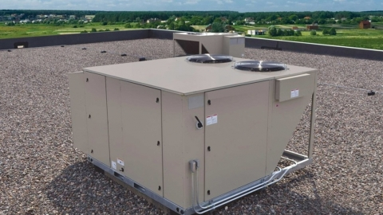
Crowdsourcing Initiatives Seek Cutting-Edge Ideas from American Innovators
BTO has been among the first government organizations to use crowdsourcing to advance innovation. Our goal is to provide an opportunity for citizens and businesses who may not have the resources to apply to our traditional funding opportunities to quickly bring game-changing products to market.
In March 2015, we launched the Buildings Crowdsourcing Community Campaign with ORNL. The campaign gave innovators an opportunity to easily submit their ideas for the best new building technology to an online platform, where they could be discussed and voted on by the R&D community and general public. More than 300 innovators, including students, designers, and small businesses, participated in the campaign across three categories: equipment and appliances, sensors and controls, and building envelope technologies. ORNL announced the winners in September at the first ever Industry Day in Oak Ridge, Tennessee.
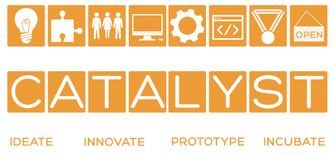This fall, ORNL took crowdsourcing one step further, and brought in industry partners A.O. Smith, GE, and United Technologies Research Center, to launch a follow-up campaign called JUMP, or “Join the discussion; Unveil Innovation; Make connections; Promote tech-to-market.” Each industry partner is sponsoring an innovation campaign to solve a specific challenge: efficient water heaters, safer defrost systems, and low-cost BTU sensors for HVAC units. Winning submitters may qualify for cash prizes, in-kind technical support, and will have the opportunity for future collaboration with the industry partner or with ORNL through DOE’s Small Business Voucher pilot.
In 2015, BTO also partnered with the SunShot Catalyst crowd-sourcing initiative to spur entrepeneurs and developers to develop software prototypes that promote better engagement with building occupants or improve building energy management. Five building finalists were selected in summer 2015 to demonstrate their prototypes at Demo Day in December 2015. There, finalists publicly presented before a panel of investors, judges, and peers for a chance to win up to $500,000 in additional funds to advance their early stage solutions toward commercialization.
Governments Make it Easier for Homeowners to Improve Energy Efficiency
The average homeowner spends more than $2,000 each year on energy, yet when they buy a house, they typically have little information on how much utility bills are likely to run.
DOE’s Home Energy Score program is breaking down this market barrier by providing homeowners a low-cost, reliable assessment of their home’s energy performance. As of December 2015, over 30,000 homeowners received the score. The Score has three parts: 1) the numeric score, which is similar to a vehicle’s miles-per-gallon rating; 2) facts about the scored home; and 3) recommended improvements to increase the home’s score and energy efficiency. Trained assessors conduct a brief home walk-through and rate the home on a scale of 1 to 10, with 10 indicating excellent energy efficiency.
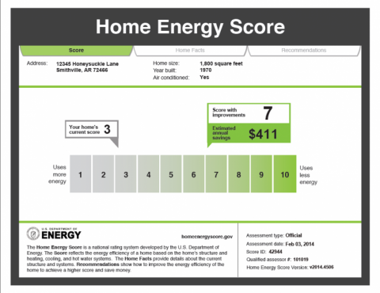In August 2015, DOE and the Department of Housing and Urban Development’s (HUD) Federal Housing Administration (FHA) launched a joint program that makes energy efficiency upgrades more affordable in areas where the Home Energy Score is available. Under the new partnership, FHA will provide flexible underwriting to recognize the reduced costs of utilities when those costs are established with a Home Energy Score. Eligible applicants with a Score of 6 or higher can increase their income qualifying ratio by 2 percent on home purchases or mortgage refinancing.
The Home Energy Score program has vastly expanded its reach through partnerships with state governments. In April 2015, Connecticut kicked off a statewide residential energy labeling program through EnergizeCT’s Home Energy Solutions program, which will provide the Home Energy Score and recommended efficiency improvements to Connecticut residents.
Colorado became the second state to offer the Home Energy Score statewide in September 2015. Organized by Better Buildings Colorado and administered through the Colorado Energy Office (CEO), the program encourages consumers to invest in energy efficiency measures when buying or selling a home by offering financial incentives to do so—$750 for every one-point improvement a borrower makes on the Home Energy Score. CEO is also coordinating with utilities and energy efficiency programs to offer the Score, which will grow the volume of scored homes at an accelerated pace.
New Home Energy Score Partnerships
- HUD-FHA will provide flexible underwriting to recognize reduced utility costs when those costs are established with the Home Energy Score.
- Connecticut plans to score 12,000–14,000 homes annually, which will help the state track progress toward its goal of weatherizing 80% of homes by 2030.
- Colorado is offering borrowers financial incentives to make improvements to their Home Energy Score numbers. The state will award $750 for every one-point improvement, up to $3,000 for a four-point improvement.

DOE Releases Common Definition for Zero Energy Buildings
DOE released a common definition for zero energy buildings, providing clarity to the building community and laying the foundation for widespread use in the industry. After leading an extensive stakeholder engagement process over the past year and a half, DOE released its findings in a recently published report, A Common Definition for Zero Energy Buildings, which states that a zero energy building is “an energy-efficient building where, on a source energy basis, the actual annual delivered energy is less than or equal to the on-site renewable exported energy.”
This definition also applies to campuses, portfolios, and communities. In addition to providing clarity across the industry, this new DOE publication provides important guidelines for how to use this definition to design, build, and measure zero energy buildings, which may also be referred to as “net zero energy” or “zero net energy” buildings.
Developing a common definition for zero energy buildings was a critical step in light of the growing demand for these buildings. The number of zero energy buildings doubled from 2012 to 2014 across 36 states, according to the New Buildings Institute. This growth highlighted the lack of clarity and consistency across the industry on key definitional issues, which was increasingly leading to market confusion. Now that there is a clear, consistent definition of a zero energy building, building owners and can better determine whether developing a zero energy building is right for them, and can spend less time debating definitions, and more time improving the performance of their buildings. In 2016, DOE will publish its first Zero Energy Design Guidance document, aimed at K-12 schools.
Advanced Energy Design Guide for Grocery Stores
- Grocery stores are responsible for approximately 9% of the total energy consumed by commercial buildings in the United States.
- To reduce this energy impact, DOE released the Advanced Energy Design Guide for Grocery Stores, which offers guidance for achieving 50% energy savings compared to a standard grocery store.
- This guide shows how to achieve a healthy and inviting indoor environment, display merchandise effectively, avoid moisture intrusion, and optimize ventilation, while also cutting energy waste and running a successful business.
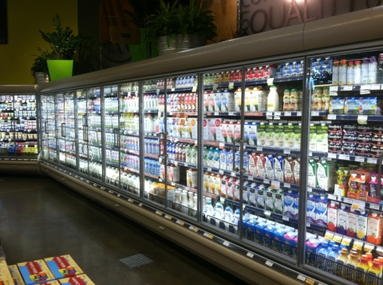
New Project Seeks to Determine if Homeowners Receive Intended Savings from Building Energy Codes
Across the U.S., the buildings community and policymakers have become increasingly interested in building energy codes. A significant body of analysis, including from DOE, shows how much energy buildings would consume under the newest codes compared to older ones. For example, current model building energy codes are 30% more efficient than they were just eight years ago. But these analyses don’t account for how buildings are actually built. There has been a pervasive lack of data on how much actual savings energy codes deliver, which presents large-scale, private investment in state-level energy code programs.
BTO’s Building Energy Codes Program launched a project to quantify how much of the energy savings potential in newly built single-family homes is actually being realized, and then determine whether training programs can increase those savings. The project has two goals: (1) to establish a national model methodology that will allow additional states to perform these studies, and (2) establish a data-supported business case that will encourage private investment, particularly from utilities, in programs that will increase energy code savings.
The project was designed to establish sufficient data sets to sta- tistically represent statewide trends. To that end, BTO, through a competitive funding opportunity, selected eight states to lead the studies: Alabama, Arkansas, Georgia, Kentucky, Maryland, North Carolina, Pennsylvania, and Texas. The studies comprise three main stages, all of which involve the contractors going into the field:
- A baseline field study to identify the energy use in typical single-family homes, and the individual code requirements with high savings potential and low compliance
- An education, training, and outreach phase targeting issues identified through the baseline study
- A follow-up field study to identify changes in energy use following the second phase
The first stage of the project—completing baseline code compliance studies—is well underway, with data collection complete in five of the eight states. So far, the results indicate that builders overall are meeting the energy targets of the adopted codes: on average, homes are using less energy than would be expected based solely on the prescriptive code in most of the states analyzed. However, there is still significant savings potential from individual code requirements that do not comply. In the coming year, states will develop education programs to improve compliance with these requirements. A proven, positive correlation between outreach/training efforts and lower energy usage could motivate private industry, particularly utilities, to invest in compliance programs, leading to large national energy savings.
Analyses of Latest Model Codes Indicate Increased Energy Savings
DOE has issued final notices of determination regarding energy efficiency improvements in the 2015 International Energy Conservation Code (IECC) and ASHRAE 90.1-2013, affirming that they save energy relative to the preceding versions of the code.
National energy cost savings:
- 2015 IECC (Residential Buildings) – 1%
- 2015 IECC (Commercial Buildings) – 11.5%
- ASHRAE Standard 90.1-2013 (Commercial Buildings) – 8.7%
*IECC savings are in comparison to the 2012 version. ASHRAE savings are in comparison to the 2010 version.
Per federal statute, DOE issues notices determining whether new buildings constructed in accordance with the latest national model codes will realize energy savings. These analyses are intended to help states and local jurisdictions make informed decisions regarding model code adoption
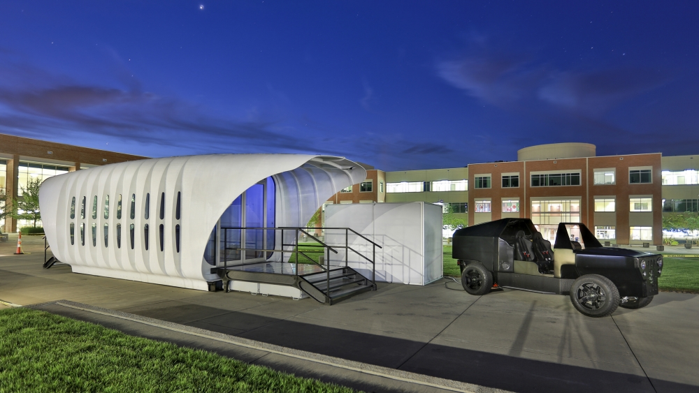
3-D Printed Home Showcases the Future of Construction and Energy Management
Buildings and vehicles account for nearly 70 percent of the energy used by the U.S. For as long as they’ve existed, these sources have operated independently—until now. Meet AMIE, pictured above, which is changing the way we think about generating, storing, and using electrical power. Consisting of a 3-D printed building and vehicle, AMIE, or the Additive Manufacturing Integrated Energy demonstration project, uses an integrated energy system to share energy between the two systems—and the grid. It was unveiled at EERE Industry Day in September 2015.
AMIE exists because a team of innovators dared to dream big. “Team” is key—this project brought together partners from DOE, Oak Ridge National Lab, and multiple industry sectors to make AMIE a reality. Using advanced manufacturing and rapid innovation, the project took only one year from concept to unveiling. The building was designed by architecture firm Skidmore, Owings, and Merrill (SOM) and assembled by Clayton Homes, the nation’s largest builder of manufactured housing, with Alcoa/Kawneer, NanoPore, GE Appliances, and more contributing materials and expertise. The ORNL team worked with industry partners to manufacture and connect the solar-powered building to a natural-gas-powered hybrid electric vehicle, creating an integrated energy system.
Power can flow in either direction between the vehicle and building through a lab-developed wireless technology. This approach allows the vehicle to provide power to the house when the sun is not shining. By balancing the intermittent power from the build- ing’s 3.2-kilowatt solar array with supplemental power from the vehicle, AMIE can manage the system’s electrical demand and load. Meanwhile, advanced vacuum insulation panels, along with building controls, maximize the efficiency of the system’s components.
This integrated approach to energy generation, storage, and consumption can spur new solutions for the modern electric grid, which faces challenges ranging from extreme weather to growing renewable energy use, particularly as the transportation sector moves away from fossil fuels. Now that the concept has been demonstrated at the single-unit level, it can serve as a model to be deployed in full-scale sustainable communities.
DOE’s ‘Tour of Zero’ Shows Zero Energy Homes are Here Today
Buying a home is not easy. Home buyers, especially first-time buyers, have a lot of information to consider—ranging from location to cost to aesthetics. Comfort, durability, and overall value of the home also play a role. One factor that home buyers might not immediately consider is a home’s energy efficiency.
But the fact is, a home’s energy efficiency can be directly tied to all the above factors—in positive ways.
BTO’s Zero Energy Ready Home (ZERH) initiative is proving this. By partnering with homebuilders who seek to build some of the most highly efficient, cost-effective homes on the market, the ZERH initiative has already resulted in over 14,000 energy efficient homes and millions of dollars in energy savings. These homes must meet strict guidelines and be verified by a qualified third party, ensuring that homebuyers can trust the energy savings and quality of the home they are looking to purchase.
However, many homebuyers aren’t aware of the full benefits of a Zero Energy Ready Home, or that they’re available today. To help break down this market barrier, we recently launched an interactive, online tool—the Tour of Zero, a virtual tour of highly efficient homes, featuring extensive photographs, homeowner testimonials, lists of innovations, floor plans, and key statistics like how much money homebuyers are saving on their monthly utility bill. Beyond the energy savings, many homeowners point out other advantages of their home, like improved comfort, quality, and air quality—all critical factors in the ZERH guidelines. Consumers will also see that ZERHs are available in every major U.S. climate zone.
The Tour of Zero can increase awareness and interest in ZERHs, allowing consumers to make more informed home purchase decisions—decisions that are better for homebuyers, their communities, and the global society. BTO is currently promoting this tool to homebuyers by working with stakeholders vested in high-performance homes, including manufacturers, associations, nongovernment organizations, utilities, and government programs.
Building a Vision of the Future
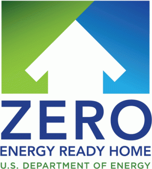BTO and the Pacific Northwest National Laboratory (PNNL) are developing a vision for buildings of the future—at least one hundred years from today—based on the collective views of thought leaders. A clear, compelling vision of future buildings serves two purposes: (1) helping DOE advance program planning and prepare the right strategies to attain the vision, and (2) inspiring the development of new, high impact solutions for the built environment.
Using the four lenses of utilities, environment, occupants, and markets, the BTO–PNNL team investigated key design and technology trends that could revolutionize the built environment across the areas of energy and water use, greenhouse gas emissions, material consumption, building control and communication, resilient design, occupant health and productivity, and cyber and physical security. Researchers also considered related topics that have direct impacts on the long-term trajectory of buildings, like modes of transportation, electric grid integration, and community-scale planning.
Over the past year, BTO collected ideas through literature studies, webinars, thought leader interviews, and panel discussions. These panels focused on key questions, such as: How will building use types and functions differ from how they do now? How will societal needs and interests shape future buildings?
In July 2015, BTO held a final workshop at the American Institute of Architects headquarters in Washington, D.C., where nearly 100 experts gathered to review preliminary findings and provide additional input for the future buildings vision.
The BTO-PNNL team is writing a final summary paper with the aim to publish it in a leading peer-reviewed journal. This published document will detail a well-planned future in which building-related advances stem from reduced resource usage, social and environmental benefits, and valuation of buildings as resource assets instead of resource consumers
Dr. Jason Hartke joined BTO in April 2015 as the new Program Manager for Commercial Buildings Integration (CBI), leading a dynamic team focused on implementing an integrated, market-driven deployment strategy to dramatically reduce energy consumption in commercial buildings across the country.
After being onboard for less than a year, Jason has already instilled a culture of leadership and collaboration across his team, making significant contributions to the launch of new major initiatives and CBI’s ongoing progress and strategic direction.
“Partnership is the new leadership,” Jason likes to say, referring to a collaborative ethos he fosters, which has been on display in all aspects of CBI’s work, including the big announcements they’ve made this year – from the common definition of Zero Energy Buildings to the SEED Collaborative. In fact, Jason and the CBI team continue to leverage DOE’s convening power to bring together market leaders from across the commercial buildings community, creating even more opportunities to accelerate efficiency. He’s also empowered his team members to find new ways to highlight their project milestones, engage with market leaders, and advance new ideas and new projects that will help unlock innovative efficiency opportunities.
With Jason’s leadership, the CBI Program has continued to make significant progress in 2015 – driving the market adoption of high-impact technologies, creating new partnerships to increase the impact of commercial building data in the market, and devising new strategies for accelerating zero energy buildings. “Here at CBI we work together to ensure we’re doing everything we can to accelerate energy saving opportunities in the commercial buildings market,” said Jason. “And I’m honored to lead the CBI team, a dedicated group of professionals who deserve recognition for working tirelessly this year to drive incredible change in the market.”
Before joining DOE, Jason spent nearly a decade as a senior executive at the U.S. Green Building Council, where he led national and international green building programs and campaigns to strengthen the economy and protect the environment. In charge of USGBC’s policy agenda, Jason oversaw mission-critical advocacy and policy efforts that helped result in the passage of historic federal investment in green buildings, new federal leadership programs in energy efficiency, and a fivefold increase in green building policies at the state and local level. In addition, Jason served in the Clinton Administration, working in the West Wing of the White House in the Office of Intergovernmental Affairs, a policy and outreach team that serves as the president’s liaison to state and local elected officials throughout the country. Jason was also an award-winning journalist, working as a reporter with the Connection Newspapers covering state and local politics, real estate, land use, and community affairs.
Jason received his Ph.D. in public policy from George Mason University. He holds his master’s degree in journalism and mass communication from the University of North Carolina at Chapel Hill.
Key Highlights
- Launching the Interior Lighting Campaign, which surpassed its original goal of installing 100,000 high-efficient troffers in less than three months, and then increased its goal to 1 million
- Supporting the growth of important market tools, like the Asset Score, which is now being used by more than 60 million square feet of commercial real estate, and the Building Performance Database, which has grown to include over 850,000 building records
- Laying the foundation for Zero Energy Buildings by creating a common definition and measurement guidelines for use by the building industry
- Implementing key components of the Energy Efficiency Improvement Act of 2015 to better address efficiency opportunities for the billions of square feet of commercial space occupied by tenants